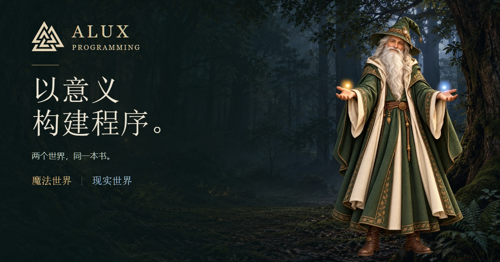
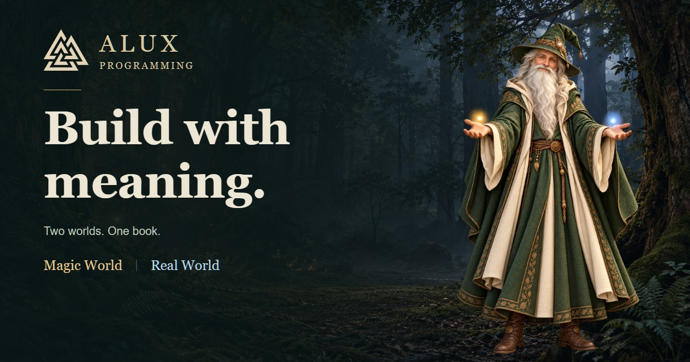
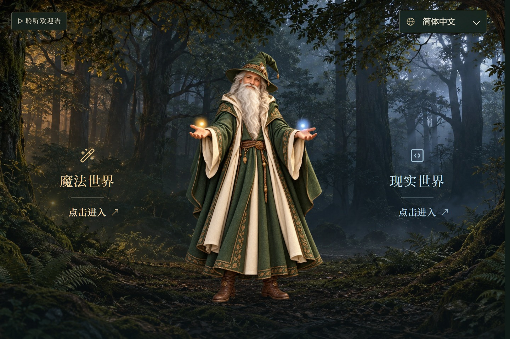
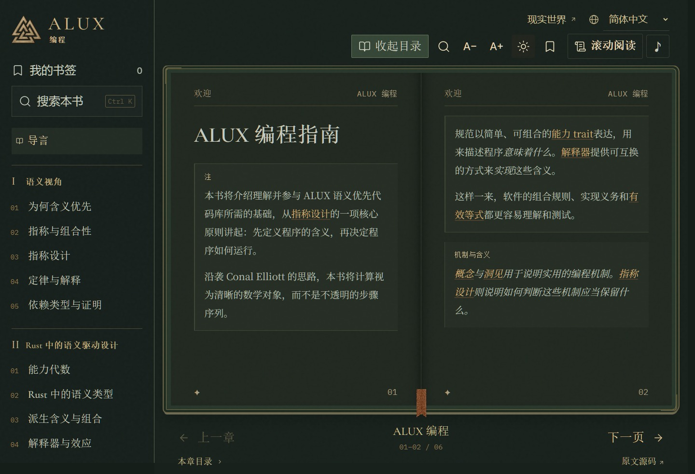
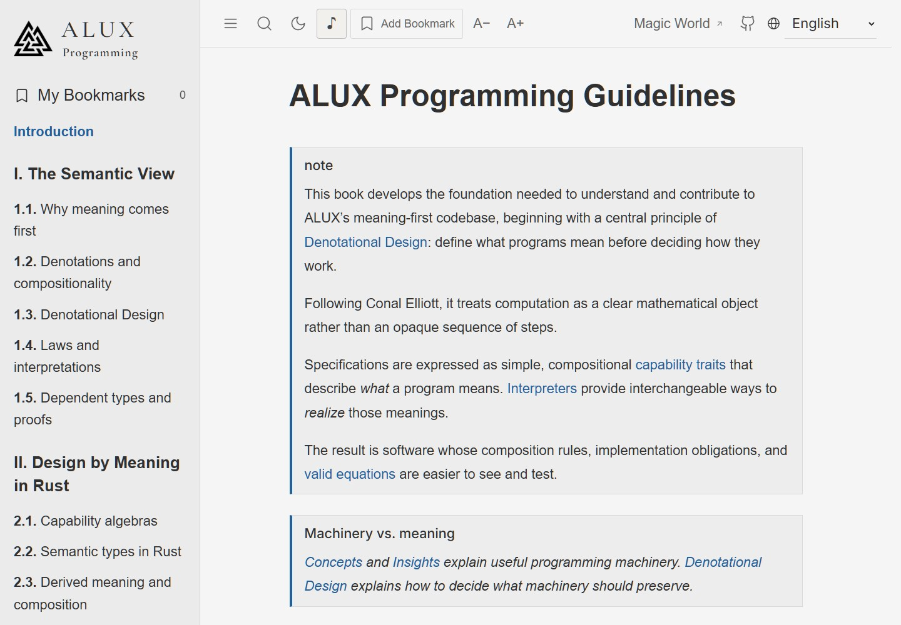
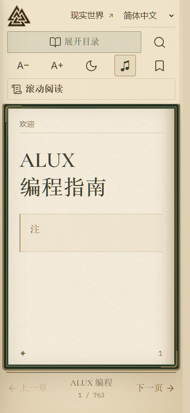

ALUX编程 · Programming
选择一个世界，开始阅读。Choose a world. Begin your journey.
中文与英文，两个世界，同一本书。
Chinese and English. Two worlds. One book.
分享卡片Share cards

从意义出发，探索指称设计、组合性与 Rust，选择适合自己的阅读世界。
进入中文网站 ↗
Explore meaning-first design, compositionality and Rust in two reading worlds.
Explore the English website ↗欢迎来到阿拉克斯Welcome to ALUX
森林入口The forest gateway



查看手机效果 / View the mobile layout

分享卡片的实际显示和平台缓存需在上线后核对。
Live social previews and platform caches can be checked after deployment.